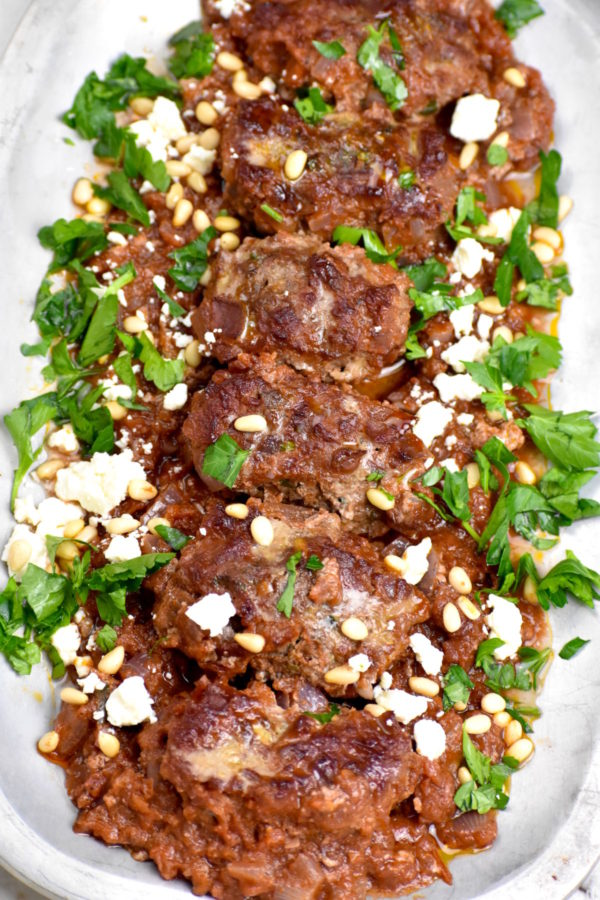

Soutzoukakia

Description
An authentic Soutzoukakia recipe as introduced to the Greek cuisine in the beginning of the 20th century. These baked meatballs are infused with the aromas of cumin and soaked in a tasty and rich tomato sauce, making them the perfect comfort food!
Ingredients
For the Meatballs (Soutzoukakia)
- 800 g ground beef (28 ounce)
- 4 cloves of garlic, minced
- 2 eggs
- 2 teaspoon of ground cumin (if you are a fan of cumin, try 3–4 teaspoons)
- 1/2 teaspoon of cinnamon
- 1/4 cup of olive oil
- 5 slices of stale bread soaked in red wine and squeezed dry or 1 cup of breadcrumbs
- salt and freshly ground pepper
For the Tomato Sauce
- 3 cup tomato juice (passata) or tinned chopped tomatoes (800 g or 28 oz)
- 1 onion, grated
- 1 cup red wine
- 2 garlic cloves, minced
- 1 tbsp tomato paste
- olive oil
- 1 tsp sugar
- salt and freshly ground black pepper
- 2 tsps cumin
- 1 bay leaf
Instructions
- To prepare the soutzoukakia, knead all meatball ingredients together and leave the mixture in the fridge for 1 hour.
- Once done, portion your meatballs and shape them into oblong meatballs about 70g/2.4oz in size. You can shallow fry gently in oil till golden brown or for a lighter dish, bake the soutzoukakia in the oven at 200C/390F till golden brown.
- While your Soutzoukakia are baking, its time to prepare the tomato sauce. Start by sauté the onion in olive oil on medium heat until translucent. Stir in the tomato paste, cumin and a bit of salt and pepper and fry for 2 minutes. Add the squashed garlic and fry for 3-4 minutes until the garlic has cooked and its aromas coming through. Finally add the wine, the tomato juice or your tinned chopped tomatoes, sugar and the bay leaf. Bring to a boil, turn the heat down to low and simmer until the Soutzoukakia sauce starts to thicken.
- Its now time to bring your Soutzoukakia together! Gently place the fried/ baked soutzoukakia in the tomato sauce and stir gently, being careful not to break them. Cover your pan with a lid and let them simmer on low heat for 30 minutes so the meatballs absorb all the wonderful flavours from the tomato sauce. While they are cooking give them a taste and add salt and pepper to your taste.
- If the sauce starts to thicken too soon, add a splash of water and stir through.
- Serve the soutzoukakia (baked meatballs) while still hot with some rice or mashed potatoes and lots of tomato sauce. Enjoy!!
Home